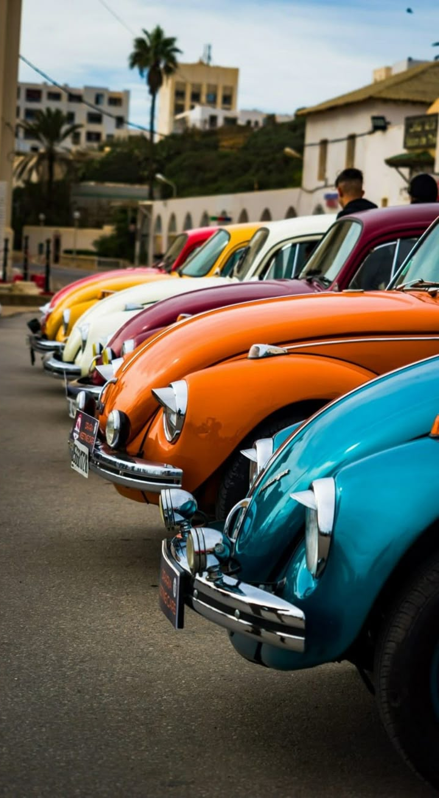

Why vintage cars?
Vintage cars are timeless treasures that capture the elegance and craftsmanship of a bygone era. With their classic curves, intricate detailing, and powerful yet refined engines, these automobiles embody a sense of nostalgia and prestige. Whether it’s the smooth lines of a 1950s Cadillac or the roaring charm of a Ford Model T, vintage cars stand as symbols of innovation and style. Enthusiasts cherish them not only for their beauty but also for the history and stories they carry, making them prized collectibles and beloved pieces of automotive heritage.
Events and location in Kenya
- Sunset GT Motorshow - KICC
- EA Safari Classic Rally - Kenya